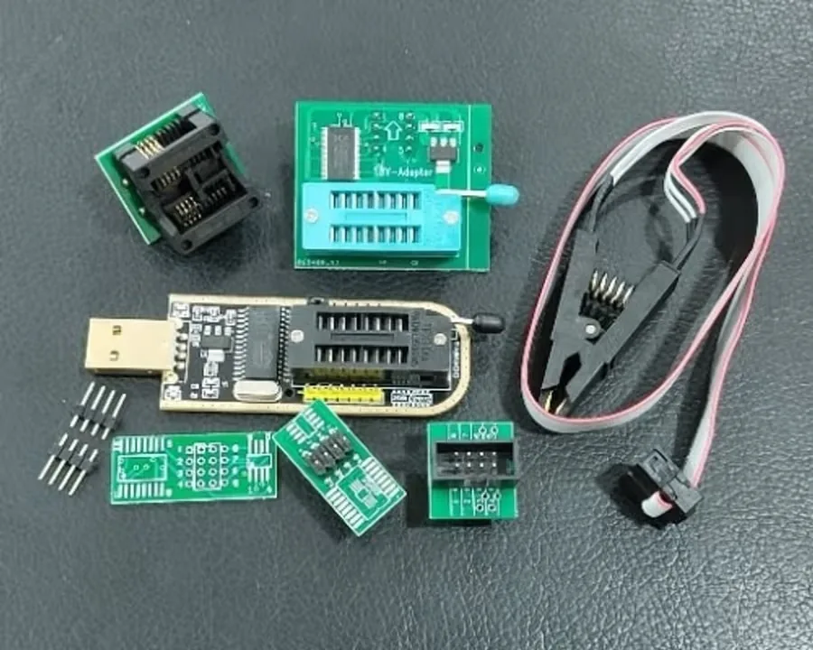

Tools
BoardView & Tools
BoardView concepts, programmer tools, repair utilities, diagnostic workflow, and legal/safe software guidance.
0 guides
Guides in this silo
Start with these repair notes
Each guide is written as original educational content with checklists, safe limitations, and links back into the wider TechRecycle library.
Related silos